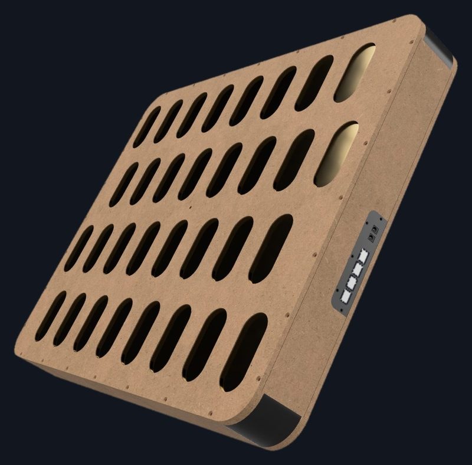
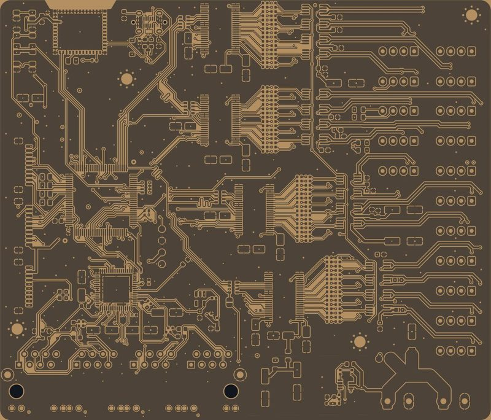
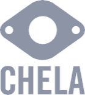

<title>Domosonica — el espacio como instrumento</title>
<style>
  /* ============ Domosonica — tema único (sala a oscuras), decisión deliberada ============ */
  :root{
    --ink:#0a0d12;        /* fondo: tinta azul-negra */
    --ink2:#11161f;       /* paneles */
    --line:#222a38;       /* hairlines */
    --air:#e9e5da;        /* texto principal, blanco cálido */
    --body:#b7bdca;       /* texto corrido */
    --muted:#8d94a6;      /* secundario */
    --wood:#c9a06b;       /* madera MDF: lo físico, lo editorial */
    --wave:#6fe0ce;       /* luz teal: el fenómeno acústico */
    --wave-hot:#eafff8;
    --display:"Avenir Next",Avenir,"Segoe UI Variable Display","Segoe UI",system-ui,sans-serif;
    --sans:-apple-system,BlinkMacSystemFont,"Segoe UI",Roboto,"Helvetica Neue",Arial,sans-serif;
    --mono:ui-monospace,"SF Mono",Menlo,Consolas,"Liberation Mono",monospace;
    color-scheme:dark;
  }
  html{scroll-behavior:smooth}
  body{margin:0;background:var(--ink);color:var(--body);font:400 1.03rem/1.72 var(--sans);
       -webkit-font-smoothing:antialiased;overflow-x:hidden}
  ::selection{background:rgba(111,224,206,.22);color:var(--air)}
  a{color:var(--wood);text-decoration:none;border-bottom:1px solid rgba(201,160,107,.35);transition:color .2s,border-color .2s}
  a:hover{color:var(--wave);border-color:rgba(111,224,206,.5)}
  a:focus-visible{outline:2px solid var(--wave);outline-offset:3px;border-radius:2px}
  strong{color:var(--air);font-weight:600}
  em{color:var(--air)}

  .wrap{max-width:1040px;margin:0 auto;padding-left:clamp(1.2rem,5vw,3rem);padding-right:clamp(1.2rem,5vw,3rem)}
  .prose{max-width:66ch}
  .prose p{margin:0 0 1.15em}

  /* ---------- barra superior ---------- */
  .top{position:absolute;inset:0 0 auto 0;z-index:3;display:flex;justify-content:space-between;align-items:baseline;
       padding:1.15rem clamp(1.2rem,5vw,3rem);pointer-events:none}
  .top a{pointer-events:auto;border-bottom:none}
  .wordmark{font:600 .78rem var(--mono);color:var(--air);letter-spacing:.26em;text-transform:uppercase}
  .top nav{display:flex;gap:1.6rem}
  .top nav a{font:500 .72rem var(--mono);letter-spacing:.14em;text-transform:uppercase;color:var(--muted)}
  .top nav a:hover{color:var(--wave)}
  @media(max-width:640px){.top nav a:not(:last-child){display:none}}

  /* ---------- hero: el campo ---------- */
  .hero{position:relative;height:94vh;height:94svh;min-height:540px;overflow:hidden}
  #field{position:absolute;inset:0;width:100%;height:100%;display:block;touch-action:pan-y;cursor:crosshair}
  .hero-copy{position:absolute;left:clamp(1.2rem,5vw,4rem);bottom:clamp(4.2rem,12vh,7rem);z-index:2;
             max-width:min(620px,86vw);pointer-events:none}
  .eyebrow{font:600 .7rem/1 var(--mono);letter-spacing:.24em;text-transform:uppercase;color:var(--wood);margin:0 0 1.1rem}
  h1{font:200 clamp(2.9rem,8vw,6.4rem)/1.02 var(--display);color:var(--air);margin:0 0 .8rem;letter-spacing:.005em;
     text-shadow:0 2px 40px rgba(5,8,12,.85)}
  .tagline{font:300 clamp(1.1rem,2.3vw,1.45rem)/1.4 var(--display);letter-spacing:.01em;color:var(--air);margin:0 0 .9rem;text-wrap:balance}
  .sub{font:400 .98rem/1.65 var(--sans);color:var(--muted);margin:0;max-width:46ch;text-shadow:0 1px 18px rgba(5,8,12,.9)}
  .hud{position:absolute;right:clamp(1rem,3vw,2rem);bottom:1.1rem;z-index:2;font:400 .72rem/1.5 var(--mono);
       color:rgba(111,224,206,.8);text-align:right;font-variant-numeric:tabular-nums;pointer-events:none;
       white-space:pre-line;text-shadow:0 1px 10px rgba(5,8,12,.9)}
  .hint{position:absolute;left:50%;transform:translateX(-50%);bottom:1.1rem;z-index:2;margin:0;
        font:400 .72rem var(--mono);letter-spacing:.1em;color:var(--muted);pointer-events:none;
        transition:opacity .8s;white-space:nowrap}
  .hint b{color:var(--wave);font-weight:400}
  .hint.off{opacity:0}
  @media(max-width:560px){.hud{display:none}}

  /* ---------- secciones ---------- */
  section.blk{padding-top:clamp(3.6rem,9vh,6.4rem);padding-bottom:clamp(3.6rem,9vh,6.4rem)}
  section.blk + section.blk{border-top:1px solid var(--line)}
  .eb{font:600 .7rem/1 var(--mono);letter-spacing:.22em;text-transform:uppercase;color:var(--wood);
      display:flex;align-items:center;gap:1rem;margin:0 0 1.5rem}
  .eb::after{content:"";height:1px;flex:1;background:linear-gradient(90deg,var(--line),transparent)}
  h2{font:300 clamp(1.65rem,3.3vw,2.25rem)/1.2 var(--display);color:var(--air);margin:0 0 1.3rem;text-wrap:balance}
  h3{font:500 1.06rem/1.35 var(--display);color:var(--air);margin:0}

  /* números */
  .datos{display:flex;gap:clamp(1.8rem,4vw,3.2rem);overflow-x:auto;padding:1.3rem 0 1.1rem;margin-top:2.4rem;
         border-top:1px solid var(--line);border-bottom:1px solid var(--line)}
  .dato{flex:none}
  .dato b{display:block;font:300 1.5rem/1.25 var(--display);color:var(--air);font-weight:400;font-variant-numeric:tabular-nums}
  .dato span{font:500 .68rem/1.4 var(--mono);color:var(--muted);letter-spacing:.1em;text-transform:uppercase}

  /* pasos */
  .pasos{display:grid;grid-template-columns:repeat(3,1fr);gap:clamp(1.4rem,3vw,2.6rem);margin-top:2.2rem}
  @media(max-width:700px){.pasos{grid-template-columns:1fr}}
  .paso .n{font:400 1.4rem/1 var(--mono);color:var(--wood)}
  .paso h3{margin:.5rem 0 .5rem}
  .paso p{font-size:.94rem;line-height:1.65;margin:0;color:var(--muted)}

  /* chip de telemetría */
  .tele{display:inline-block;font:400 .78rem/1.6 var(--mono);color:var(--wave);background:var(--ink2);
        border:1px solid var(--line);padding:.55rem .9rem;margin-top:1rem;overflow-x:auto;max-width:100%;
        font-variant-numeric:tabular-nums;white-space:nowrap}

  /* figuras */
  .obras{display:grid;gap:1.8rem;margin-top:2.6rem}
  figure{margin:0}
  .plate{background:var(--ink2);border:1px solid var(--line)}
  .plate picture,.plate img{display:block;width:100%;height:auto}
  figcaption{font:400 .74rem/1.6 var(--mono);color:var(--muted);padding:.75rem .2rem 0;letter-spacing:.02em}

  /* ficha técnica */
  .ficha-scroll{overflow-x:auto;margin-top:2.4rem}
  dl.ficha{display:grid;grid-template-columns:max-content 1fr;gap:.6rem 2rem;margin:0;
           border-top:1px solid var(--line);padding-top:1.4rem;min-width:480px}
  dl.ficha dt{font:500 .72rem/2 var(--mono);letter-spacing:.12em;text-transform:uppercase;color:var(--muted)}
  dl.ficha dd{margin:0;font:400 .95rem/2 var(--sans);color:var(--air)}
  @media(max-width:560px){dl.ficha{min-width:0;grid-template-columns:1fr;gap:.1rem}
    dl.ficha dd{margin-bottom:.7rem;line-height:1.5}}

  /* convocatoria */
  .conv{border:1px solid rgba(201,160,107,.42);background:linear-gradient(180deg,rgba(201,160,107,.07),rgba(201,160,107,.015));
        padding:clamp(1.6rem,4.5vw,3rem);margin-top:.4rem}
  .conv h2{margin-top:0}
  .puede{list-style:none;margin:1.6rem 0;padding:0;display:grid;gap:.55rem}
  .puede li{font:400 .88rem/1.6 var(--mono);color:var(--body);padding-left:1.4rem;position:relative}
  .puede li::before{content:"◍";position:absolute;left:0;color:var(--wave)}
  .cta{display:inline-block;font:400 1.02rem var(--mono);color:var(--wave);border-bottom:1px solid rgba(111,224,206,.5);
       padding-bottom:2px;margin-top:.6rem}
  .cta:hover{color:var(--wave-hot);border-color:var(--wave-hot)}
  .conv .nota{font-size:.85rem;color:var(--muted);margin-top:1.4rem;margin-bottom:0}

  /* estado */
  .est{display:grid;gap:1.7rem;margin-top:2.2rem;max-width:66ch}
  .er{display:grid;grid-template-columns:16px 1fr;gap:1.1rem;align-items:start}
  .dot{width:9px;height:9px;border-radius:50%;margin-top:.5rem}
  .dot.done{background:var(--wave);box-shadow:0 0 12px rgba(111,224,206,.5)}
  .dot.now{background:var(--wood);box-shadow:0 0 12px rgba(201,160,107,.45)}
  .dot.next{background:transparent;border:1px solid var(--muted)}
  .er h3 .chip{font:500 .62rem/1 var(--mono);letter-spacing:.14em;text-transform:uppercase;color:var(--wood);
               border:1px solid rgba(201,160,107,.4);padding:.28rem .5rem;margin-left:.7rem;vertical-align:.25em;white-space:nowrap}
  .er p{margin:.4rem 0 0;font-size:.94rem;color:var(--muted)}

  /* apoyos */
  .logos{display:flex;flex-wrap:wrap;align-items:center;gap:clamp(2rem,6vw,4rem);padding-top:.4rem}
  .logos a{border-bottom:none}
  .logos img{display:block;width:auto;opacity:.8;transition:opacity .25s ease}
  .logos a:hover img,.logos a:focus-visible img{opacity:1}
  .lg-mec{height:clamp(46px,6vw,60px)}
  .lg-bal{height:clamp(20px,2.7vw,26px)}
  .lg-che{height:clamp(58px,8vw,78px)}
  .lg-note{font:400 .82rem/1.9 var(--sans);color:var(--muted);max-width:58ch;margin:1.6rem 0 0}

  /* footer */
  footer{border-top:1px solid var(--line);margin-top:clamp(3rem,8vh,5rem)}
  .foot{display:flex;flex-wrap:wrap;gap:.6rem 2.2rem;justify-content:space-between;align-items:baseline;
        padding-top:1.6rem;padding-bottom:2.6rem;font:400 .76rem/1.8 var(--mono);color:var(--muted)}
  .foot a{border-bottom:none;color:var(--muted)}
  .foot a:hover{color:var(--wave)}

  /* reveal */
  .rv{opacity:0;transform:translateY(16px);transition:opacity .7s ease,transform .7s ease}
  .rv.in{opacity:1;transform:none}
  @media(prefers-reduced-motion:reduce){
    html{scroll-behavior:auto}
    .rv{opacity:1;transform:none;transition:none}
    .hint{transition:none}
  }
  @media(prefers-reduced-motion:reduce){ a{transition:none} }

  /* Tanda de diseño: lectura estable sobre el campo, sin alterar la simulación. */
  .hero-copy::before {
    content:""; position:absolute; inset:-1.5rem -1.25rem;
    z-index:-1; pointer-events:none; border-radius:1rem;
    background:linear-gradient(90deg, rgba(10,13,18,.94), rgba(10,13,18,.88) calc(100% - .5rem), transparent);
    mask-image:linear-gradient(transparent, #000 6%, #000 94%, transparent);
  }
  .hero-copy .sub { color:var(--body); font-size:1rem; line-height:1.65; }
  .hero-copy .tagline { margin-block-end:1rem; }
  .datos {
    display:grid; grid-template-columns:repeat(auto-fit,minmax(min(100%,9rem),1fr));
    gap:1.5rem 2rem; overflow:visible;
  }
  .dato { min-inline-size:0; }
  .dato span { display:block; overflow-wrap:anywhere; }
</style>

<header class="top">
  <a class="wordmark" href="#inicio">Domosonica</a>
  <nav>
    <a href="#como">Cómo funciona</a>
    <a href="#objeto">El objeto</a>
    <a href="#convocatoria">Convocatoria</a>
  </nav>
</header>

<section class="hero" id="inicio">
  <canvas id="field" aria-label="Simulación interactiva de interferencia acústica: una fila de parlantes concentra sus ondas en un punto focal que se puede mover con el puntero"></canvas>
  <div class="hero-copy">
    <p class="eyebrow">Instalación sonora · instrumento en construcción</p>
    <h1>Domosonica</h1>
    <p class="tagline">El espacio como instrumento.</p>
    <p class="sub">Un campo de ~500 parlantes que enfoca el sonido en puntos del aire:
    focos que se encienden, se mueven y se apagan — sin que nada se mueva, salvo el sonido.</p>
  </div>
  <div class="hud" id="hud" aria-hidden="true"></div>
  <p class="hint" id="hint"><b>●</b>&nbsp; movéte sobre el campo — el foco te sigue</p>
</section>

<main class="wrap">

  <section class="blk rv" id="idea">
    <p class="eb">La idea</p>
    <div class="prose">
      <h2>Un foco de sonido, flotando en medio de la sala</h2>
      <p>Todo parlante empuja el aire. Domosonica usa cientos, cada uno con un retardo calculado
      al microsegundo, para que todas esas ondas lleguen a <strong>un mismo punto en el mismo
      instante</strong>. Ahí — y solo ahí — el sonido se suma y se enciende: un foco flotando
      en el espacio, sin nada físico que lo sostenga.</p>
      <p>No es sonido envolvente ni parlantes apuntados: es <em>interferencia</em>, la misma
      física por la que dos piedras arrojadas a un estanque dibujan patrones en el agua —
      puesta a componer. El foco puede desplazarse, abrirse en un haz, barrer la sala como
      un reflector. Eso es lo que muestra el campo de arriba: una simulación real del
      fenómeno, con la física de verdad.</p>
      <p>El horizonte del proyecto es un campo de <strong>~500 parlantes</strong> distribuidos
      en el espacio, construido con nodos autónomos de 32 canales conectados en red. La sala
      deja de ser el lugar donde suena la obra: <strong>es el instrumento</strong>.</p>
    </div>
    <div class="datos" role="list">
      <div class="dato" role="listitem"><b>32</b><span>canales por nodo</span></div>
      <div class="dato" role="listitem"><b>~500</b><span>parlantes previstos</span></div>
      <div class="dato" role="listitem"><b>80 ns</b><span>paso de retardo ≈ 0,03 mm</span></div>
      <div class="dato" role="listitem"><b>48 kHz</b><span>audio · 24 bit</span></div>
      <div class="dato" role="listitem"><b>WiFi</b><span>control en vivo</span></div>
    </div>
  </section>

  <section class="blk rv" id="como">
    <p class="eb">Cómo funciona</p>
    <div class="prose">
      <h2>Tres gestos: retardar, sumar, mover</h2>
    </div>
    <div class="pasos">
      <div class="paso">
        <span class="n">i.</span>
        <h3>Retardar</h3>
        <p>Cada parlante recibe la misma señal, desplazada unos microsegundos según su
        distancia al punto elegido. El más lejano dispara primero; el más cercano, último.</p>
      </div>
      <div class="paso">
        <span class="n">ii.</span>
        <h3>Sumar</h3>
        <p>Las ondas viajan y se encuentran. Donde llegan en fase se refuerzan entre sí;
        en el resto del espacio se desdibujan unas a otras. La energía se concentra en el foco.</p>
      </div>
      <div class="paso">
        <span class="n">iii.</span>
        <h3>Mover</h3>
        <p>Cambiando los retardos en tiempo real, el foco se desplaza por la sala.
        Nada se mueve — ningún motor, ningún parlante — salvo el sonido.</p>
      </div>
    </div>
  </section>

  <section class="blk rv" id="autofocus">
    <p class="eb">Autofocus</p>
    <div class="prose">
      <h2>El instrumento se afina escuchándose</h2>
      <p>Un array real nunca es el del plano: los parlantes se corren unos milímetros, un
      cable invierte una polaridad, la sala mete la cola. En lugar de confiar en el modelo,
      Domosonica <strong>se mide a sí misma</strong> — porque además de emitir, escucha:
      cada nodo tiene entradas para micrófonos.</p>
      <p>El gesto es simple: se apoya un micrófono <em>donde uno quiere que el sonido viva</em>.
      El sistema barre parlante por parlante con un chirrido breve, cronometra cuánto tarda
      cada onda en llegar — con resolución de fracciones de muestra — y deriva el retardo y
      la polaridad exactos de cada canal. Los errores de geometría, de arnés y de fabricación
      quedan absorbidos de una pasada.</p>
      <p>El foco no se calcula: <strong>se afina</strong>, como se afina cualquier instrumento.</p>
      <span class="tele">scan ch 12/32 → Δt = +312.4 µs · polaridad − · q 87 ✓</span>
    </div>
  </section>

  <section class="blk rv" id="objeto">
    <p class="eb">El objeto</p>
    <div class="prose">
      <h2>Hecho a mano, de a 32 canales</h2>
      <p>No existe hardware comercial razonable para quinientos canales de audio
      independientes: demasiado caro, demasiado grande, demasiado atado a infraestructura.
      Así que el instrumento se construye desde cero.</p>
      <p>Cada nodo es una placa propia — la actual es la <strong>décima revisión</strong>;
      la undécima está entrando a fabricación — con 32 amplificadores, un microcontrolador
      que calcula los retardos muestra a muestra, y WiFi para tocarlo en vivo desde el
      navegador. Los parlantes son <strong>reciclados</strong>, recuperados de equipos en
      desuso; las cajas, madera cortada a CNC. Los nodos se encadenan entre sí — alimentación
      y señal pasan de caja en caja — y el campo crece de a 32 canales por vez.</p>
    </div>
    <div class="obras">
      <figure>
        <div class="plate"><picture><source type="image/avif" srcset="img/nodo-ds10-480.avif 480w, img/nodo-ds10-800.avif 800w, img/nodo-ds10-1080.avif 1080w" sizes="(min-width: 1040px) 944px, 92vw"><source type="image/webp" srcset="img/nodo-ds10-480.webp 480w, img/nodo-ds10-800.webp 800w, img/nodo-ds10-1080.webp 1080w" sizes="(min-width: 1040px) 944px, 92vw"></picture></div>
        <figcaption>Nodo DS10 — 32 parlantes en patrón de ladrillo, caja de MDF. Alimentación y audio se encadenan al nodo siguiente.</figcaption>
      </figure>
      <figure>
        <div class="plate"><picture><source type="image/avif" srcset="img/cobre-ds10-480.avif 480w, img/cobre-ds10-800.avif 800w, img/cobre-ds10-1240.avif 1240w" sizes="(min-width: 1040px) 944px, 92vw"><source type="image/webp" srcset="img/cobre-ds10-480.webp 480w, img/cobre-ds10-800.webp 800w, img/cobre-ds10-1240.webp 1240w" sizes="(min-width: 1040px) 944px, 92vw"></picture></div>
        <figcaption>El cobre de la placa DS10 — capa superior. Décima revisión de una electrónica diseñada específicamente para este instrumento.</figcaption>
      </figure>
    </div>
    <div class="ficha-scroll">
      <dl class="ficha">
        <dt>Salidas</dt><dd>32 canales amplificados por nodo · clase D · 2,5 W por canal</dd>
        <dt>Escala prevista</dt><dd>~18 nodos en red → un campo de ~500 parlantes</dd>
        <dt>Audio</dt><dd>48 kHz · 24 bit</dd>
        <dt>Paso de retardo</dt><dd>1/256 de muestra ≈ 80 ns ≈ 0,03 mm de posición del foco</dd>
        <dt>Entradas</dt><dd>8 por nodo — micrófonos de medición o señales de línea</dd>
        <dt>Control</dt><dd>WiFi · interfaz web en tiempo real · modos conmutables en vivo</dd>
        <dt>Cómputo</dt><dd>microcontrolador a 480 MHz calculando cada retardo, muestra a muestra</dd>
        <dt>Latencia</dt><dd>~20 ms extremo a extremo</dd>
        <dt>Materiales</dt><dd>parlantes reciclados · MDF cortado a CNC · electrónica y firmware propios</dd>
      </dl>
    </div>
  </section>

  <section class="blk rv" id="convocatoria">
    <p class="eb">Para quienes componen</p>
    <div class="conv">
      <div class="prose">
        <h2>Un instrumento sin repertorio, todavía</h2>
        <p>Domosonica no tiene obras escritas. Eso no es un problema: <strong>es la
        invitación</strong>. Buscamos compositores, improvisadores y artistas sonoros que
        quieran pensar música para un instrumento que no existía — obra escrita para puntos
        del aire, para haces que cruzan la sala, para focos que respiran cerca de un oyente
        y desaparecen.</p>
      </div>
      <ul class="puede">
        <li>elegir el punto focal (x, y, z) y moverlo en tiempo real, desde el navegador</li>
        <li>orientar haces de emisión y de escucha — el instrumento también oye</li>
        <li>afinar el foco con un micrófono en el punto exacto donde va a vivir el sonido</li>
        <li>en el horizonte: trayectorias, gestos, múltiples focos simultáneos</li>
      </ul>
      <div class="prose">
        <p>El prototipo suena y se puede visitar, escuchar y probar en el taller. La idea es
        que las primeras obras y el instrumento <em>crezcan juntos</em>: lo que la música
        pida, el instrumento lo aprende.</p>
      </div>
      <a class="cta" href="mailto:bergamifer@gmail.com?subject=Domosonica%20—%20quiero%20crear%20obra">bergamifer@gmail.com</a>
      <p class="nota">Escribinos contando quién sos y qué te imaginás. No hace falta saber de
      electrónica: de eso se encarga el instrumento.</p>
    </div>
  </section>

  <section class="blk rv" id="estado">
    <p class="eb">Dónde está hoy</p>
    <div class="est">
      <div class="er">
        <span class="dot done"></span>
        <div>
          <h3>El primer nodo suena <span class="chip">hoy</span></h3>
          <p>Un nodo completo en el taller: foco dirigible en vivo, calibración por micrófono,
          control desde el navegador. La física, verificada en el osciloscopio y en el aire.</p>
        </div>
      </div>
      <div class="er">
        <span class="dot now"></span>
        <div>
          <h3>La placa de producción <span class="chip">en fabricación</span></h3>
          <p>La undécima revisión de la electrónica está entrando a fábrica: todo lo aprendido
          en un año de mediciones, condensado en la placa que multiplica el campo.</p>
        </div>
      </div>
      <div class="er">
        <span class="dot next"></span>
        <div>
          <h3>Las primeras obras <span class="chip">se buscan</span></h3>
          <p>Un muro multi-nodo — y compositores dispuestos a escribirle música a un
          instrumento recién nacido.</p>
        </div>
      </div>
    </div>
  </section>

  <section class="blk rv" id="apoyos">
    <p class="eb">Con el apoyo de</p>
    <div class="logos">
      <a href="https://buenosaires.gob.ar/mecenazgo" target="_blank" rel="noopener">
        </a>
      <a href="https://balanz.com" target="_blank" rel="noopener">
        </a>
      <a href="https://chela.org.ar" target="_blank" rel="noopener">
        </a>
    </div>
    <p class="lg-note">Domosonica se realiza a través del Régimen de Promoción Cultural
    —Mecenazgo— de la Ciudad de Buenos Aires, con el aporte de Balanz Capital y la
    colaboración de CheLA, donde vive el taller.</p>
  </section>

</main>

<footer>
  <div class="wrap foot">
    <span>Domosonica — un proyecto de Fernando Bergami · electrónica y firmware de
      <a href="https://apachetasistemas.com.ar/">Apacheta Sistemas</a></span>
    <a href="mailto:bergamifer@gmail.com">bergamifer@gmail.com</a>
    <span>2026 · esta página, como el instrumento, está en construcción</span>
  </div>
</footer>

<script>
(() => {
  "use strict";
  const cv = document.getElementById("field");
  if (!cv || !cv.getContext) return;
  const ctx = cv.getContext("2d");
  const hud = document.getElementById("hud");
  const hint = document.getElementById("hint");
  const hero = cv.parentElement;
  const RM = matchMedia("(prefers-reduced-motion: reduce)").matches;
  const COARSE = matchMedia("(pointer: coarse)").matches;
  const DPR = Math.min(window.devicePixelRatio || 1, 2);

  /* --- grilla del campo (baja resolución, se escala al dibujar) --- */
  const FW = COARSE ? 132 : 176, FH = COARSE ? 84 : 110, CELLS = FW * FH;
  const off = document.createElement("canvas");
  off.width = FW; off.height = FH;
  const octx = off.getContext("2d");
  const img = octx.createImageData(FW, FH);

  /* --- escena física (metros) --- */
  const C = 343;                 // velocidad del sonido
  const SCENE_W = 4.0;           // ancho de la escena
  const N = 16;                  // fuentes (fila de parlantes)
  const ARR_W = 0.72 * SCENE_W;  // ancho del array
  const spacing = ARR_W / (N - 1);
  const LAMBDA = 2 * spacing;    // λ = 2d → sin lóbulos de rejilla
  const K = 2 * Math.PI / LAMBDA;
  const sx = new Float32Array(N);
  for (let i = 0; i < N; i++) sx[i] = -ARR_W / 2 + i * spacing;

  let cw = 0, ch = 0, sceneH = 2.5, zBottom = 0;
  let dist = null;               // distancias precomputadas fuente→celda
  const pd = new Float32Array(N);

  /* --- paleta del campo: tinta → teal → blanco caliente (gamma horneado) --- */
  const LR = new Uint8Array(256), LG = new Uint8Array(256), LB = new Uint8Array(256);
  (function buildLUT() {
    const stops = [
      [0.00, 10, 13, 18],
      [0.22, 14, 42, 52],
      [0.50, 28, 118, 114],
      [0.78, 111, 224, 206],
      [1.00, 240, 255, 250]
    ];
    for (let i = 0; i < 256; i++) {
      const t = Math.pow(i / 255, 0.62);
      let a = stops[0], b = stops[stops.length - 1];
      for (let s = 0; s < stops.length - 1; s++)
        if (t >= stops[s][0] && t <= stops[s + 1][0]) { a = stops[s]; b = stops[s + 1]; break; }
      const f = (t - a[0]) / (b[0] - a[0] || 1);
      LR[i] = a[1] + (b[1] - a[1]) * f;
      LG[i] = a[2] + (b[2] - a[2]) * f;
      LB[i] = a[3] + (b[3] - a[3]) * f;
    }
  })();

  /* --- estado del foco --- */
  let fx = 0.0, fz = 1.25;       // foco actual
  let tgx = fx, tgz = fz;        // objetivo
  let lastPoke = -1e9;           // última interacción
  let running = true, needsField = true, lastT = 0, hinted = false;

  function buildGeometry() {
    sceneH = SCENE_W * (ch / cw || 0.62);
    zBottom = -0.06 * sceneH;
    if (!dist || dist.length !== N * CELLS) dist = new Float32Array(N * CELLS);
    let c = 0;
    for (let gy = 0; gy < FH; gy++) {
      const z = zBottom + ((FH - 1 - gy) / (FH - 1)) * sceneH;
      for (let gx = 0; gx < FW; gx++) {
        const x = (gx / (FW - 1) - 0.5) * SCENE_W;
        for (let i = 0; i < N; i++) {
          const dx = x - sx[i];
          dist[i * CELLS + c] = Math.sqrt(dx * dx + z * z);
        }
        c++;
      }
    }
    needsField = true;
  }

  function resize() {
    const r = hero.getBoundingClientRect();
    cw = Math.max(1, Math.round(r.width));
    ch = Math.max(1, Math.round(r.height));
    cv.width = Math.round(cw * DPR);
    cv.height = Math.round(ch * DPR);
    ctx.setTransform(DPR, 0, 0, DPR, 0, 0);
    ctx.imageSmoothingEnabled = true;
    ctx.imageSmoothingQuality = "high";
    buildGeometry();
  }

  const zToPy = z => ((zBottom + sceneH - z) / sceneH) * ch;
  const xToPx = x => (x / SCENE_W + 0.5) * cw;

  function renderField(breath) {
    let dmin = 1e9, dmax = -1e9;
    for (let i = 0; i < N; i++) {
      const dx = fx - sx[i];
      const d = Math.sqrt(dx * dx + fz * fz);
      pd[i] = K * d;
      if (d < dmin) dmin = d;
      if (d > dmax) dmax = d;
    }
    const data = img.data, invN = 1 / N, amp = 255 * breath;
    let c = 0, p = 0;
    for (let gy = 0; gy < FH; gy++) {
      for (let gx = 0; gx < FW; gx++) {
        let re = 0, im = 0;
        for (let i = 0; i < N; i++) {
          const ph = K * dist[i * CELLS + c] - pd[i];
          re += Math.cos(ph);
          im += Math.sin(ph);
        }
        let li = (Math.sqrt(re * re + im * im) * invN * amp) | 0;
        if (li > 255) li = 255;
        data[p] = LR[li]; data[p + 1] = LG[li]; data[p + 2] = LB[li]; data[p + 3] = 255;
        p += 4; c++;
      }
    }
    octx.putImageData(img, 0, 0);
    ctx.drawImage(off, 0, 0, cw, ch);

    /* array (madera) */
    const py0 = zToPy(0);
    ctx.strokeStyle = "rgba(201,160,107,.25)";
    ctx.lineWidth = 1;
    ctx.beginPath();
    ctx.moveTo(xToPx(sx[0]), py0);
    ctx.lineTo(xToPx(sx[N - 1]), py0);
    ctx.stroke();
    ctx.fillStyle = "#c9a06b";
    for (let i = 0; i < N; i++) {
      ctx.beginPath();
      ctx.arc(xToPx(sx[i]), py0, 2.6, 0, 6.2832);
      ctx.fill();
    }

    /* foco */
    const fpx = xToPx(fx), fpy = zToPy(fz);
    ctx.strokeStyle = "rgba(234,255,248,.9)";
    ctx.lineWidth = 1.4;
    ctx.beginPath(); ctx.arc(fpx, fpy, 9, 0, 6.2832); ctx.stroke();
    ctx.fillStyle = "rgba(234,255,248,.95)";
    ctx.beginPath(); ctx.arc(fpx, fpy, 2, 0, 6.2832); ctx.fill();

    if (hud) {
      const dt = (dmax - dmin) / C * 1000;
      hud.textContent = "foco x " + (fx >= 0 ? "+" : "−") + Math.abs(fx).toFixed(2) +
        " m · d " + Math.sqrt(fx * fx + fz * fz).toFixed(2) +
        " m · Δt máx " + dt.toFixed(2) + " ms\n" +
        "16 fuentes · λ 38 cm · interferencia real";
    }
  }

  function hideHint() {
    if (!hinted && hint) { hinted = true; hint.classList.add("off"); }
  }

  function setTarget(e) {
    const r = cv.getBoundingClientRect();
    const nx = (e.clientX - r.left) / r.width;
    const ny = (e.clientY - r.top) / r.height;
    tgx = Math.max(-.48, Math.min(.48, nx - .5)) * SCENE_W;
    tgz = Math.max(0.22, Math.min(sceneH * 0.98, zBottom + (1 - ny) * sceneH));
    lastPoke = performance.now();
    hideHint();
    if (RM) { fx = tgx; fz = tgz; needsField = true; }
  }

  let dragging = false;
  cv.addEventListener("pointermove", e => {
    if (e.pointerType === "mouse" || dragging) setTarget(e);
  });
  cv.addEventListener("pointerdown", e => {
    dragging = true;
    try { cv.setPointerCapture(e.pointerId); } catch (_) {}
    setTarget(e);
  });
  addEventListener("pointerup", () => { dragging = false; });

  function tick(ts) {
    requestAnimationFrame(tick);
    if (!running || !cw) return;
    if (ts - lastT < 30) return;
    lastT = ts;
    if (RM) {
      if (!needsField) return;
      needsField = false;
      renderField(1);
      return;
    }
    const t = ts / 1000;
    if (ts - lastPoke > 4000) {   /* deriva autónoma cuando nadie toca */
      tgx = 1.12 * Math.sin(t * 0.21 + 0.7);
      tgz = Math.max(0.25, 0.42 * sceneH + 0.30 * sceneH * Math.sin(t * 0.127 + 1.2));
    }
    fx += (tgx - fx) * 0.13;
    fz += (tgz - fz) * 0.13;
    renderField(0.94 + 0.06 * Math.sin(t * 1.1));
  }

  new IntersectionObserver(es => {
    running = es[0].isIntersecting;
    if (running) needsField = true;
  }).observe(cv);

  if ("ResizeObserver" in window) new ResizeObserver(resize).observe(hero);
  addEventListener("resize", resize);
  resize();
  requestAnimationFrame(tick);

  /* --- revelado suave de secciones --- */
  if (!RM) {
    const io = new IntersectionObserver(es => es.forEach(x => {
      if (x.isIntersecting) { x.target.classList.add("in"); io.unobserve(x.target); }
    }), { threshold: 0.1 });
    document.querySelectorAll(".rv").forEach(el => io.observe(el));
  } else {
    document.querySelectorAll(".rv").forEach(el => el.classList.add("in"));
  }
})();
</script>
